2004 : Le WEBA de Cherbourg
(WEBA : Week-End du Bout de l'An)

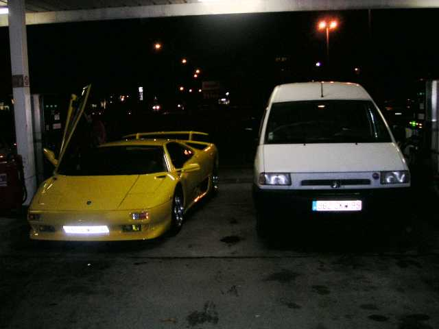
Fin de l'année, dernière occasion de voler ensemble. Pas un festival, une conviviale un peu surprise dont le lieu change tous les ans (faut pas abuser toujours des mêmes généreux hôtes !). C'est fait pour des cervolistes gonflés et aimant le défi, car la météo à cette époque n'est même pas aléatoire ! Donc, en général, on affronte des vents pas possibles, on se gèle, on se mouille et il faut se réchauffer solidement...

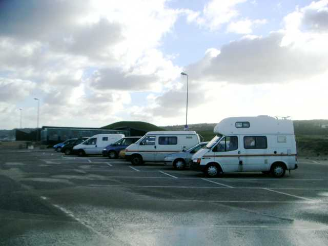
Nonobstant, le lendemain de l'arrivée, au petit matin, rassemblement des nombreux participants sur le parking de la plage de Collignon vers le Becquet.

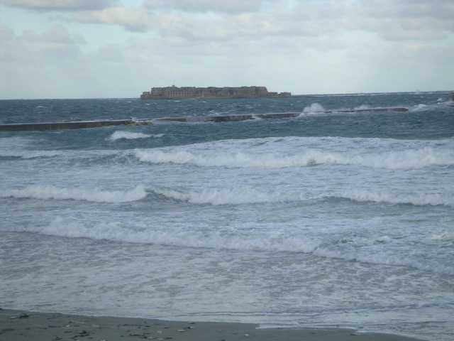
La météo est un peu fraîche, le ciel assez dégagé, mais surtout, il souffle un vent à décorner les boeufs !

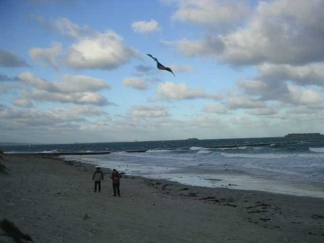
Mais rien n'arrête François, qui sera le premier à mettre quelque chose en l'air. On ne le dirait pas sur la photo, mais c'est un delta, qui a quand même bien du mal à voler droit !

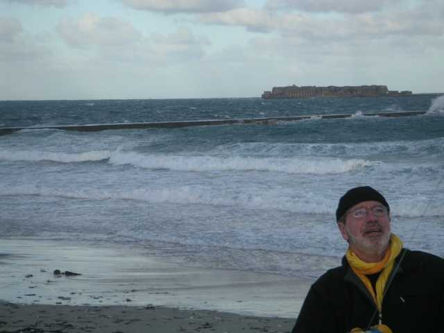
Christian monte son flow-form modifié, d'une exemplaire stabilité. Michel sort à son tour du matos, même s'il n'a pas l'air très chaud...

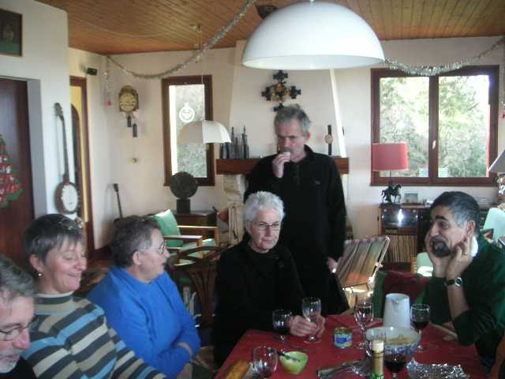
Comme on a déjà pas mal cassé et qu'on n'a pas envie de pique-niquer par Force 6-7, on monte déjeuner chez lui.

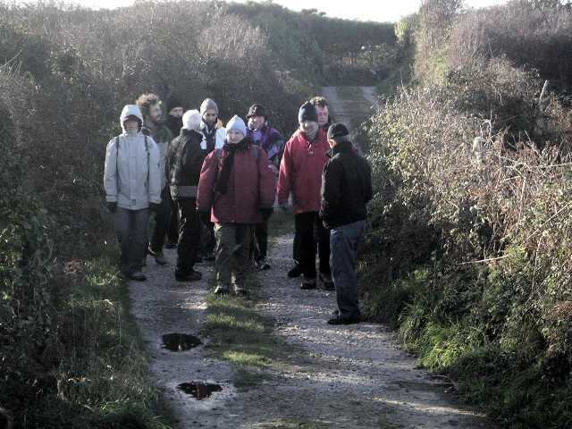
L'après-midi, vent toujours dément. On décide d'abord d'une petite ballade autour du Cap Lévi pour bien en profiter, et c'est sûr, c'est vivifiant !

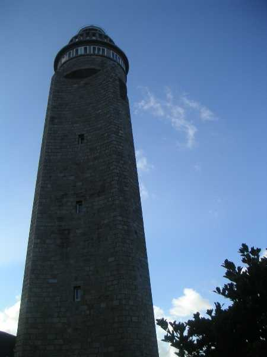
On marche dans l'arrière pays assez abrités du vent jusqu'au phare...

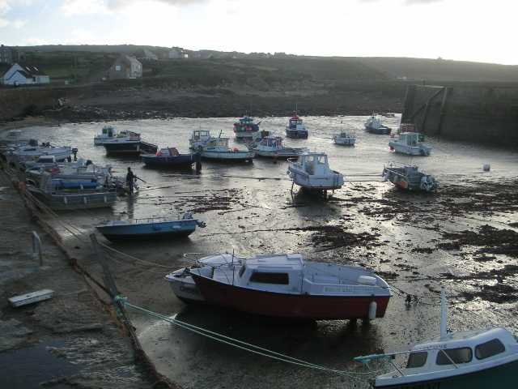
Et là, sans prévenir on nous fait revenir le long de la côte vers le petit port de départ. Ça décoiffe !

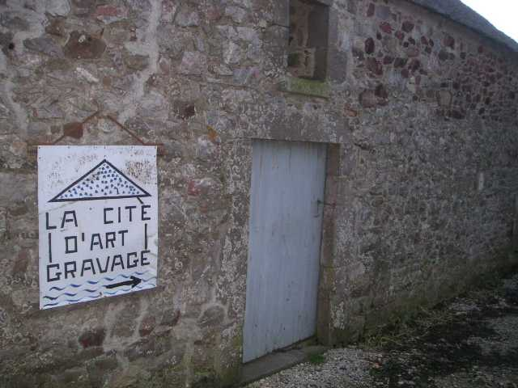
On a profité de la ballade pour s'initier à l'Art Gravage. Quoi t'est-ce ? Hé bien on ramasse le long des grèves (c'est la période "Gravage") des bois flottés et tous objets intéressants, et on les assemble (c'est la période "Art") pour faire des "statues" ou des objets curieux et intéressants (sièges, portemanteaux, mobiles, jardins du vent, etc.).

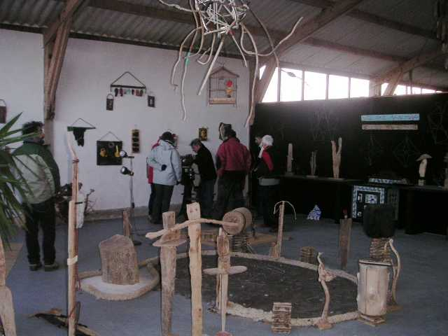
Comme il fait toujours trop de vent, on change le programme (CV après la ballade) pour visiter dans la foulée l'atelier de l'association pilotée par un fondu de la chose et à laquelle Michel participe.

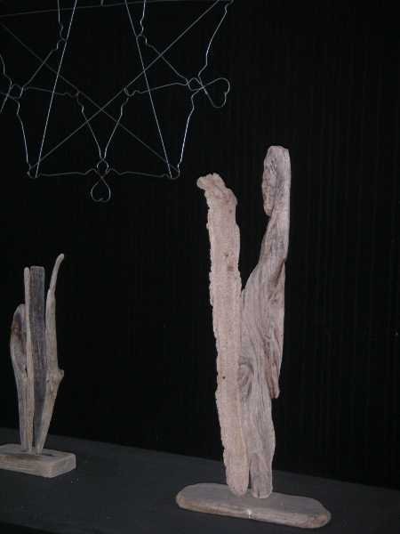
On peut arriver à des objets d'une esthétique parfaite et prenante...

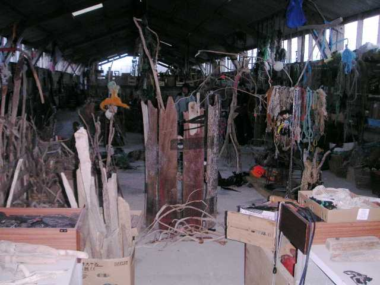
Et puis, si on ne trouve pas le morceau qui va bien, c'est qu'on y met de la mauvaise volonté, il y a de la réserve !

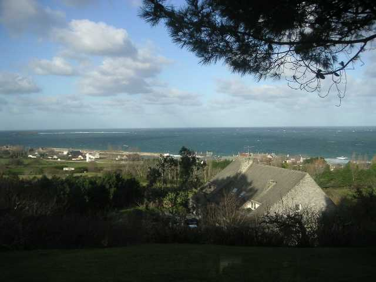
Comme il fait encore jour, en attendant le resto tout le monde est invité au thé-vin chaud chez Michel. De chez lui une splendide vue dominante sur la rade de Cherbourg.

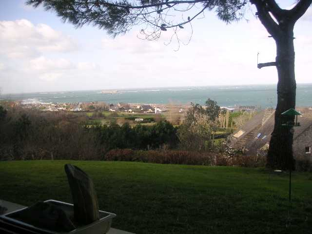
L'idéal serait de raser la maison du dessous, mais un arbre bien placé limite les dégâts, et elle a un beau toit aux teintes des roches locales.

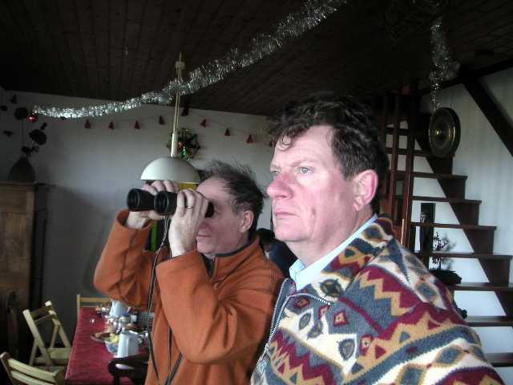
Les cervolistes ne perdent pas une miette du paysage, malgré le thé ou autre déjà servi.

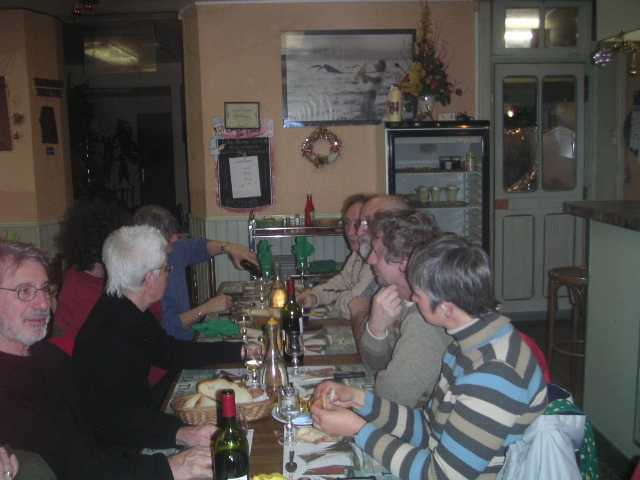
Les 2 soirs, au restaurant, tout le monde se retrouve pour se raconter les coups de la journée.

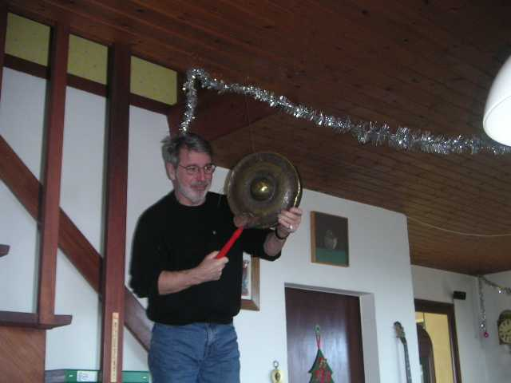
La soirée est consacrée entre autres à des explorations musicales, comme le gong de Michel...

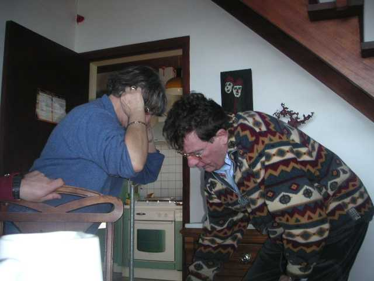
...ou la tige filetée de devinez-qui qu'il fait essayer à Louisette...

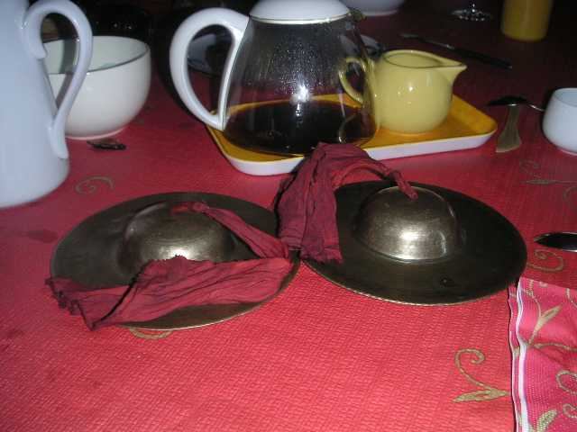
...ou des cymbales de bronze qui placées près des oreilles voient leurs graves s'amplifier, avec des modulations profondes en fonction de leur mouvement.

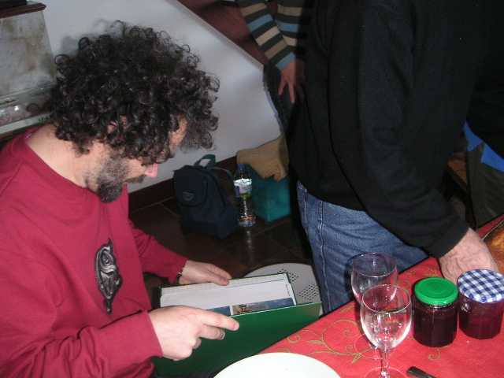
L'autre soirée, Didier avec l'aide de Patrick et d'Annick organise un atelier de mini cerfs-volants...

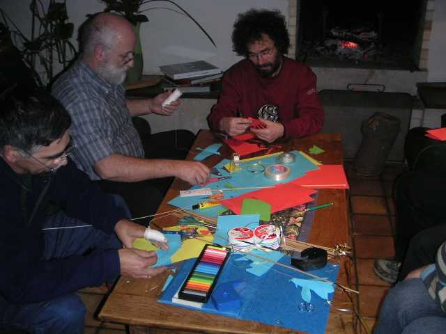
Tout le monde commence à s'affairer autour de la table-établi (la blessure au doigt n'est pas imputable au découpage cervolistique...).

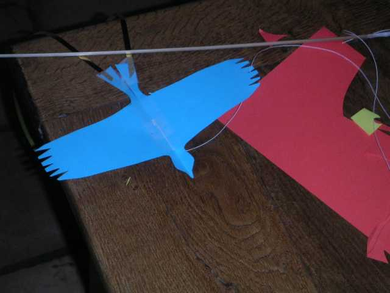
Certains sont très esthétiques et volent remarquablement, avec surtout les queues en Bolduc doré et une perche de longueur doublée...

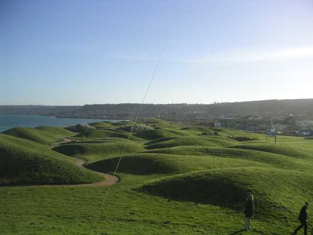
Le deuxième jour, temps idéal pour voler sur le site, vu ici en photo aérienne (on voit bien le fil du porteur)

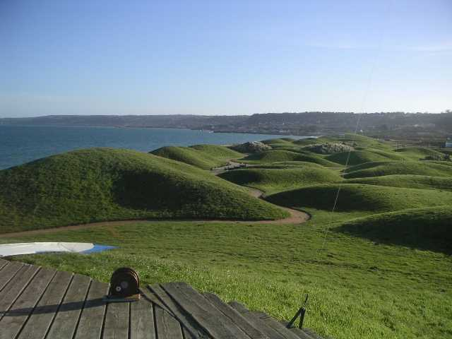
Bon, la photo n'était pas vraiment une aérophoto, mais le site reste magnifique. Il a fait tellement beau et chaud (enfin, pour la saison...) qu'on a pique-niqué sur place à midi, avec quand même un barnum coupe-vent...

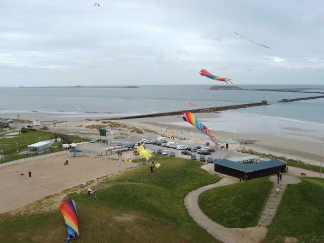
Et les cerfs-volants ? Il y en avait plus de quinze en vol, j'ai même monté à la fois simultanément, ensemble et en même temps mon Albatros (réparé de sa fracture alaire de la veille) et Megoel. Christian a fait plein d'aérophotos dont celle-ci.
Mais moi, excuses, j'avais oublié de recharger mon appareil, alors je n'ai pas d'images. Dommage, c'était beau, la presse s'est même déplacée en notre honneur !
Conclusion, le meilleur WEBA depuis sa création, par l'accueil (merci aux gentils hébergeurs) et aussi par la météo, avec le deuxième jour Force 4 descendant vers 2, du soleil et 11°6 à 8 heures du matin...